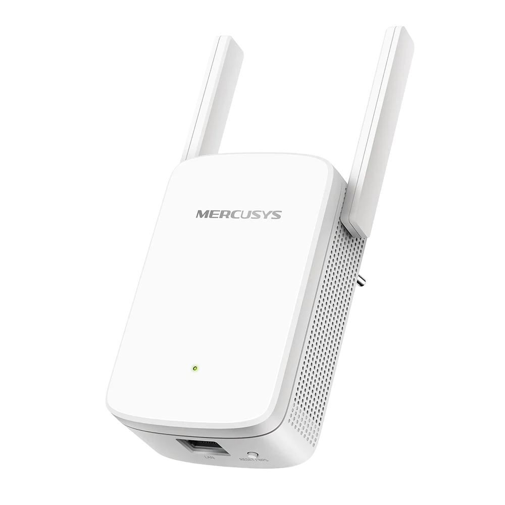
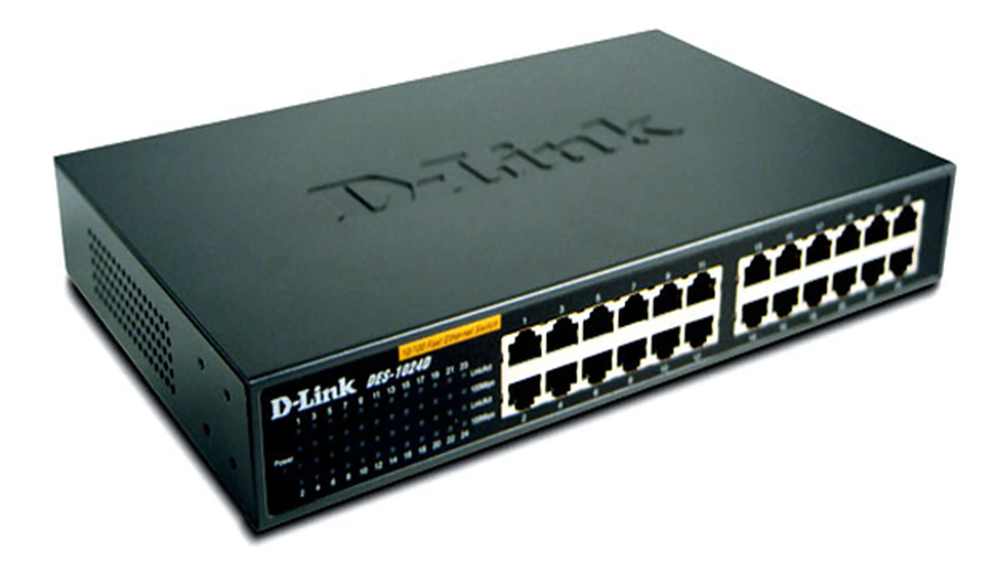
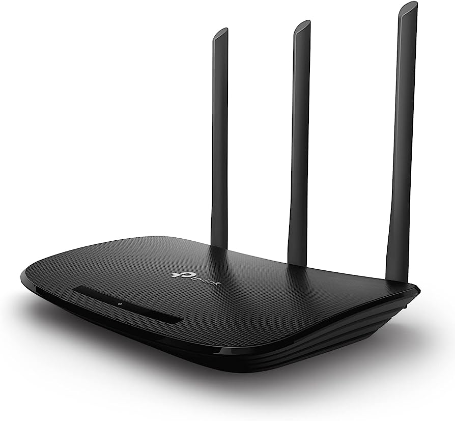
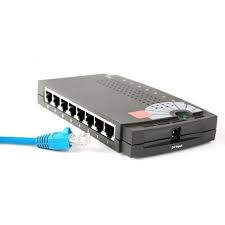
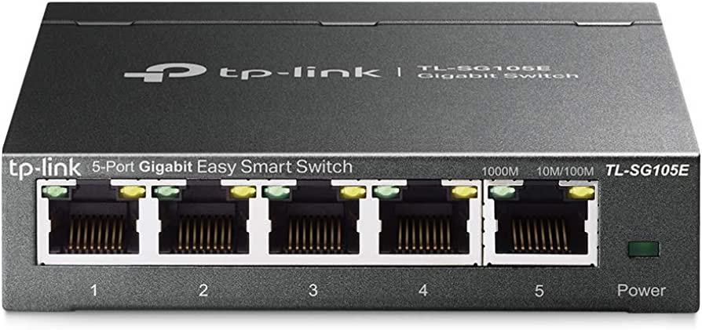

Repetidor |
Un repetidor es un dispositivo electrónico que recibe una señal débil o de bajo nivel y la retransmite a una potencia o nivel más altoSin IP propiaEjemplo:Se usa un repetidor en una universidad para que en más salones llegue la señal |
Hub |
Es un aparato que hace de puente al que podemos conectar varios dispositivos, usando solo una conexión del dispositivo al que queremos conectar estos aparatosSin IP propiaEjemplo:Una televisión que tiene un Hub para conectar múltiples dispositivos mediante entrada HDMI |
Router |
Es un dispositivo dedicado a la tarea de administrar el tráfico de información que circula por una red de computadoras.IP propiaEjemplo:Sirve para conectar una red local (oficina) con otra red (internet) |
Bridge |
Conecta dos protocolos de comunicación diferentes y permite su comunicación traduciendo los datosSin IP propiaEjemplo:Conexión de dos departamentos en una empresa |
Switch |
Permite conectar varios dispositivos en una red local y dirigir el tráfico entre ellosIP propiaEjemplo:Conectar varios ordenadores dentro de una red de oficinas |
Computadoras |
Dispositivo que puede recibir, almacenar, procesar, información y generar resultados o respuestasIP propiaEjemplo:Una computadora para uso personal
|